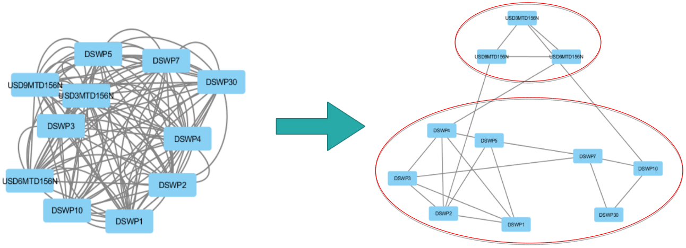
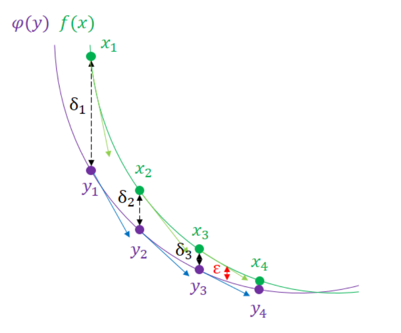
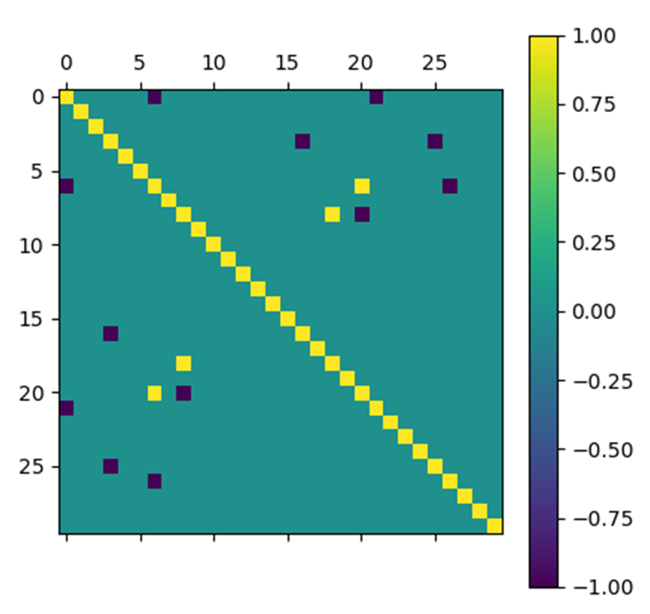
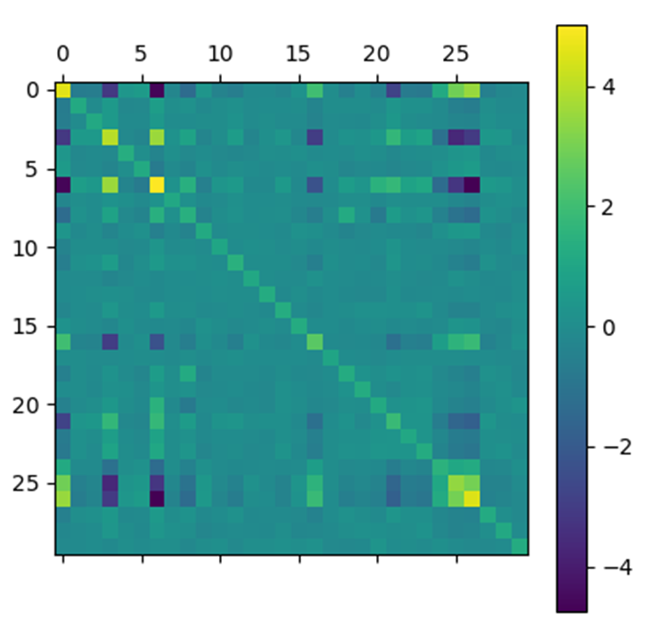
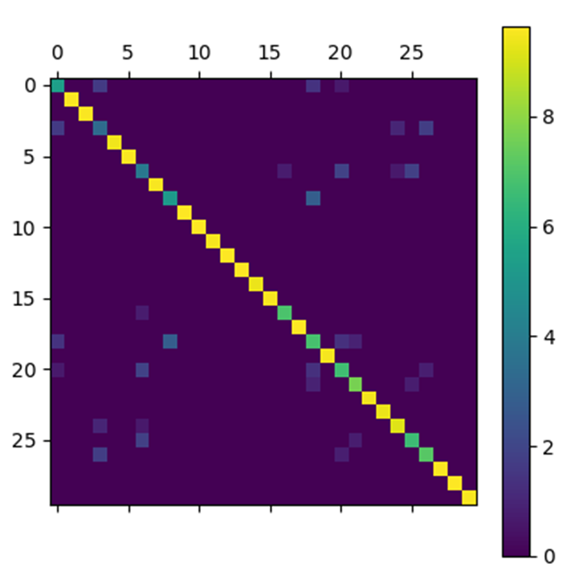
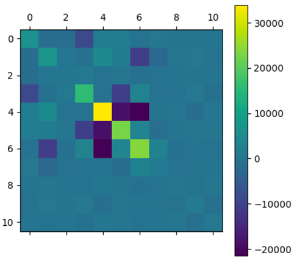
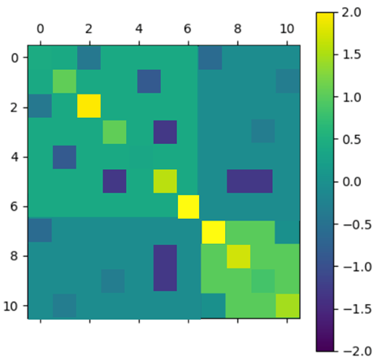

Identifying clusters of correlated variables

Determining the dependency structures between different assets or risk factors is at the heart of multidimensional financial modelling problems. For example, when considering a portfolio of assets, Markowitz theory states that it is important that the portfolio be diversified and therefore that the assets be as uncorrelated as possible.
Mathematically, the natural variable to model this dependence structure is the covariance matrix. Indeed, in the context of Gaussian variables, covariance is sufficient to describe correlation structures (which is not the case for other distributions). Moreover, although the focus is on covariance and the criterion studied is based on Gaussian modelling, the information obtained is actually richer and can be applied to other distributions.
However, the empirical data that we exploit are affected by noise that biases the estimation and conventional methods then provide poor results.
The aim is therefore to obtain a noise-free covariance matrix, called sparse due to a large number of zero coefficients, from a noisy covariance matrix. This problem can be written as an optimization problem in which one seeks to maximize the log-likelihood of the solution by penalizing the number of zeros in the inverse covariance matrix. In addition, we impose constraints on its eigenvalues to ensure that the matrix is positive, and to further limit the solution, given the information that we would have a priori on the problem. In the Gaussian framework, the latter is formulated as follows:
$$\text{max} \ f(X) := \log \det X - < \Sigma, X > - \rho \ Card(X)$$
$$\text{s.c.} \ \alpha I_n \leq X \leq \beta I_n$$
$$\Sigma \in S_n^{+}, \ X \in S_n$$
$$\rho, \ \alpha, \ \beta > 0$$
However, this problem is described as NP-difficult, which means that it cannot be solved by computer in a reasonable time - one reason for this is the non-convexity of the objective function. It is therefore necessary to transform it. For this, convex relaxation methods are applied to the initial problem. These methods make it possible to put the problem into a form for which numerical solving algorithms exist. The algorithm used here is the algorithm of Nesterov (2005).
Nesterov's algorithm is based on recent and efficient optimization methods to determine the extremum of a function $\phi(y)$ which is close to the function $f(X)$. By reducing the difference between the exact solution and the approximated solution by successive iterations (see figure below), we obtain a result very close to the exact solution.

In order to make sure that the algorithm is properly implemented, we tested it on a very simple noisy matrix. It was constructed as follows:


We applied Nesterov's algorithm to this test matrix with $\epsilon = 10^{-5}$, $\rho = 0.5$, $\alpha = 10^{-1}$, $\beta = 10$ and $\sigma = 0.15$.

In order to present the results obtained by the Nesterov algorithm for the test matrix, we represent the matrices at the input and output of the algorithm by arrays of pixels where each pixel has a color that depends on the value of the coefficient with which it is associated.
The results obtained are very satisfactory. Indeed, the matrix obtained by the algorithm looks very much like the initial noiseless matrix.
We then applied our algorithm to a covariance matrix obtained empirically from data on interest rate changes.


After applying the algorithm, the selected matrix has a globally diagonal block structure. To interpret this structure, a graphical representation is used where the nodes are the different assets and an edge is drawn between two nodes if they are correlated (i.e. of non-zero covariance).
Thus, we obtain two clusters that show that swaps are correlated according to their maturity. The top cluster has maturities of $3$, $6$ and $9$ months and the bottom cluster has maturities of $1$ to $30$ years. These different maturities correspond to different markets and different financing needs.
Variance-covariance estimation by sparse method is a powerful and generic tool to manage constraints and keep some traceability at the data level. This method helps to extract fine information from noisy data, which could not have been properly analyzed without removing the noise contribution.